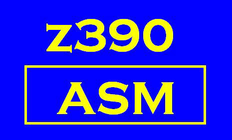

z390 Project - Support Page

|  | z390 Project - Support Page |
|
If you have questions, please join the z390 or zCOBOL Yahoo! groups: z390 Group, zCobol Group. Search the archives, and if you do not find an answer, post a question to the group.
If it is a bug, please open a problem ticket at https://sourceforge.net/p/z390/problems/.
To open an enhancement ticket, go to https://sourceforge.net/p/z390/enhancements.
The old "Support Log" is found here: http://www.z390.org/z390_Support_Request_Log.htm
IBM, CICS, HLASM, MVS, OS/390, VSAM, z9, z10, and z/OS
are registered trademarks
of International Business Machines Corporation
This page last updated
Monday, January 28, 2013.
Webmaster
Sitemap
Copyright 2011-13 Automated Software Tools Corporation